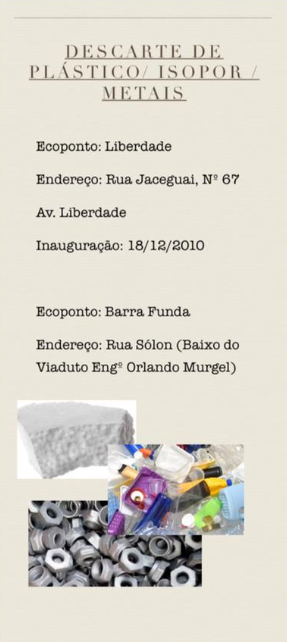
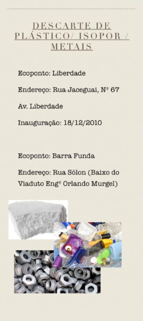

A Ecologia é a parte da Biologia que estuda as relações dos seres vivos entre si e destes com o meio. O termo, que foi usado pela primeira vez em 1866 por Ernest Haeckel, vem da junção de duas palavras gregas: Oikos, que significa casa, e logos, que quer dizer estudo. Assim sendo, ecologia significa o “estudo da casa” ou o “estudo do habitat dos seres vivos”.
Ciência ampla e complexa, a Ecologia preocupa-se com o entendimento do funcionamento de toda a natureza. Assim como vários outros campos de estudo da Biologia, ela não é uma ciência isolada.
Para entendê-la, é necessário, por exemplo, conhecer um pouco de Evolução, Genética, Biologia Molecular, Fisiologia e Anatomia.
A Ecologia é a parte da Biologia que estuda as relações dos seres vivos entre si e destes com o meio...

Ao estudar a Ecologia, os ecólogos conseguem visualizar de maneira clara como as...

A Reciclagem é importante tanto para o Meio Ambiente, quanto para as pessoas...
A coleta seletiva e a reciclagem desempenham papel fundamental na preservação da espécie...
Totalmente! O isopor é um plástico inflado e 100% reciclável. Ao descartá-lo na lixeira destinada aos plásticos, garanta que...
O óleo de cozinha usado pode parecer inocente, mas é um grande contaminante. Um litro de óleo descartado no ralo da pia...
Pensando na questão da sustentabilidade, decidimos criar uma sessão voltada a divulgação de pontos de coleta na nossa região, clique no botão abaixo para saber mais!!!
Saiba Mais
 
